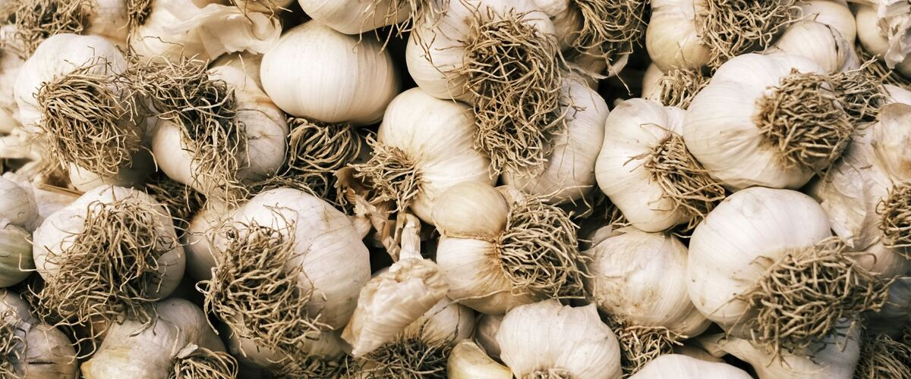
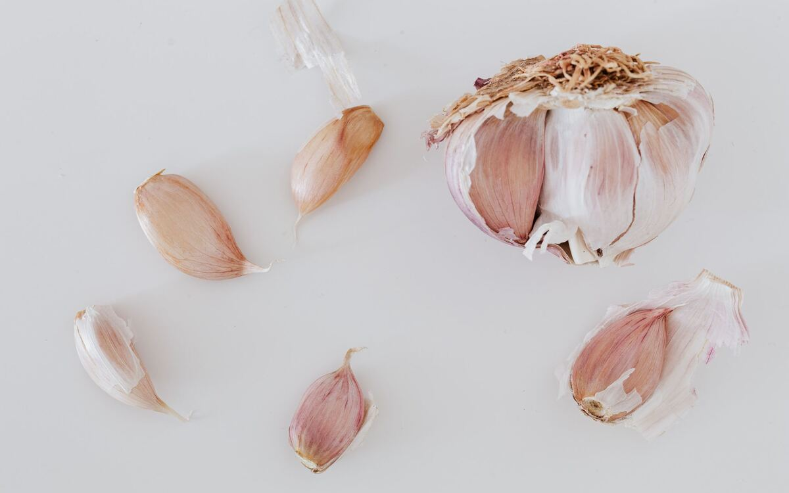

Plant guides · Oregon · Washington · Idaho
When and How to Plant Garlic
Garlic goes in during fall and comes out the next summer. Here's when to plant it where you live, which kind to buy, and how to harvest and cure it.
Garlic is one of the easiest and most rewarding crops in a Northwest garden, and it runs on a different schedule from almost everything else. You plant it in fall, it grows roots and a few leaves before winter, sits through the cold, and then bulks up in spring. By early summer you're digging heads of garlic out of a bed you haven't thought about since October.
When to plant
Plant garlic in fall, after the soil has cooled but a few weeks before it freezes hard, so the cloves can root in. That timing varies a lot across the region:
- Portland and the west side: Oct 1 – Nov 15. See Portland's garlic page.
- Spokane and the inland Northwest: Sep 25 – Oct 31.
- Boise and the Treasure Valley: Oct 1 – Nov 1.
- Bend and the high desert: Sep 20 – Oct 20.
If you miss the window, you can still plant in early spring as soon as the soil can be worked, but the heads will be smaller.
Hardneck or softneck?
Hardneck garlic grows a stiff center stalk and sends up a curly flower stem called a scape in early summer. The cloves are bigger and easier to peel, and it handles cold winters well. Softneck garlic has no stiff stalk, stores longer and is the kind you can braid. Both grow well west of the Cascades; hardnecks are the safer choice where winters are cold.
Buy seed garlic from a garden center or seed company rather than planting grocery-store bulbs. Store garlic is often a variety grown for a mild climate, and it may have been treated to slow sprouting.

How to plant
- Pick a sunny spot with soil that drains. Garlic rots in soggy ground, so a raised bed is ideal in rainy areas.
- Loosen the soil and mix in an inch or two of compost.
- Break the heads into cloves just before planting. Save the biggest cloves for planting; they grow the biggest heads.
- Plant each clove pointed end up, about 2 inches deep and 6 inches apart.
- Cover the bed with a few inches of straw or shredded leaves. Mulch keeps the soil from heaving in freeze-thaw cycles and smothers spring weeds.
Spring and early summer care
Pull weeds as they appear, because garlic doesn't compete well. Water during dry spells in spring. On hardneck garlic, snap off the scapes when they curl; they're delicious sautéed, and removing them helps the plant put its energy into the bulb. Stop watering once the leaves start to yellow in early summer.
Harvesting and curing
Dig garlic when the lower third or so of the leaves have turned brown but the upper leaves are still green. Each green leaf is a wrapper around the bulb, so waiting too long leaves the heads with thin skins that split. Loosen the soil with a garden fork and lift the plants rather than pulling them.
Cure the whole plants in a shady, dry, airy place for two to three weeks, then trim the roots and stems. Keep the biggest, best heads to plant again in fall.
Shallots grow on the same schedule. See shallot planting dates.